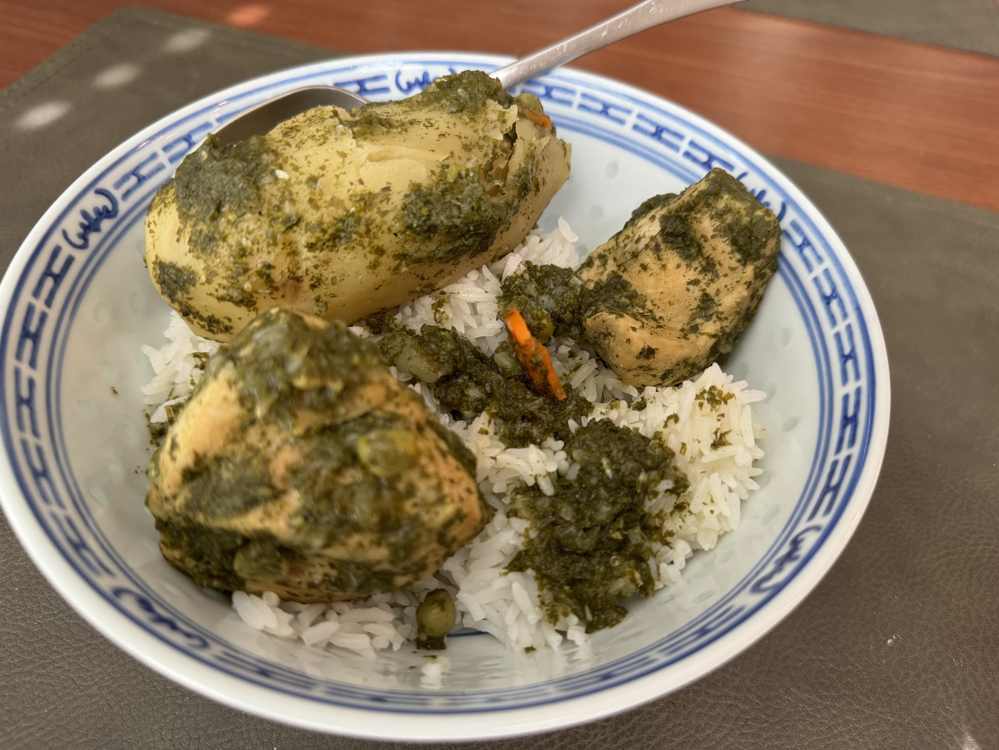

Seco De Pollo

Ingredients
- 1 or 2 pieces of Chicken Breast
- 1/2 Red Onion
- 2 Garlic Cloves
- Salt
- Pepper
- 2 bunches of Cilantro
- 2-3 Potatoes
- Peas
- Stick of Carrot
- 3 cups of Water
- 1 cup of Rice
Steps
- Wash and cook rice.
- Peel potatoes.
- Slice chicken breast to smaller pieces.
- Dice half of the red onion.
- Dice the two cloves of garlic.
- Slice stick of carrot into thin circular slices
- Twist stems off the two bunches of cilantro and then blend with a a cup of water.
Note: You can use a food processor for steps 4-5 to dice the red onion and garlic cloves for you. Then you may also liquify the cilantro from step 7 after emptying the garlic and onion.
- Begin cooking the diced onion and garlic in a pot, medium heat.
- After about a minute or two, add cilantro water mix into the pot. Then add salt and pepper and teo additional cups of water. Be generous with the amount of salt.
- Add chicken
- Add peas and carrots to taste.
- Set a timer for 15 minutes miinutes.
- After 15 minutes, add peeled potatoes.
- Set timer for an additional 15 minutes.
- Serve after timer is up or until potatoes are soft with the cooked rice.